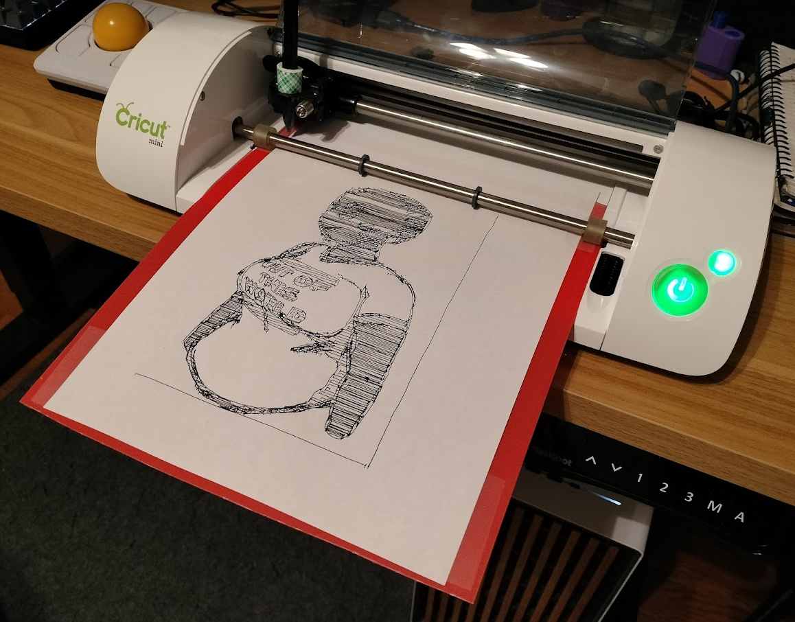
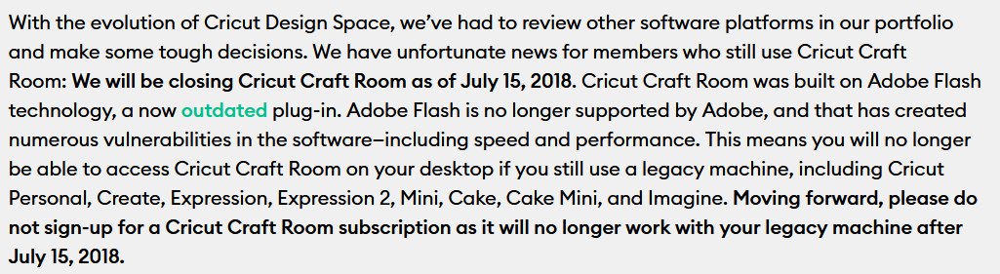
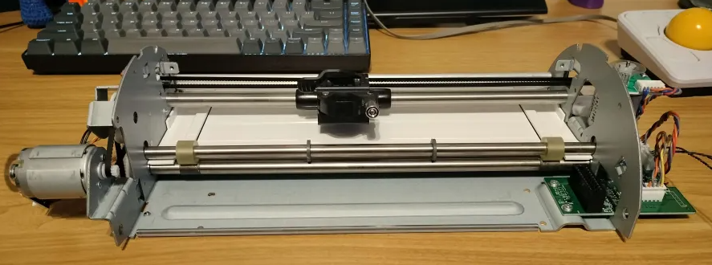
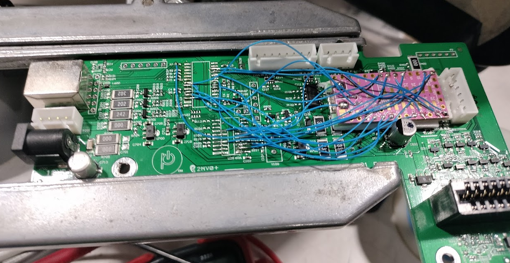

This was originally posted to Cohost on April 4th, 2024
 Spoilers: It works!I was apparently a raccoon in a past life, or something, because I just love digging through e-waste. Every tech company I've worked at has had a bin somewhere that, if you're persistent, you can get some real goodies out of. An Xbox Elite controller, an entire working 2-in-1 laptop, parts for projects, all things I've fished from the bin.
Recently my work had an employee e-waste event where people could drop off their own stuff. And in there, I found this thing - a Cricut Mini.
For those who don't know - Cricut makes a series of cutting machines with the same form factor as like, a printer. You load in some material and a cutting blade drags across the surface, cutting out shapes for craft projects. It's a neat piece of tech, and so finding this one discarded, I figured I'd take it home and see if I could fix it.
Part 1: So what's wrong with it?
I took it home and did a little research trying to figure out what common failure points are for these things. I didn't have to look far before I found an extremely likely culprit for why it got binned.
See, the Cricut machines are made for non-techy people. Most of them work by letting you insert a cartridge loaded with designs from Provo Craft, the company that makes the thing. Then, you use a built in control panel to select a design and let the machine cut it out. You may notice from the photo that the Cricut Mini doesn't have an on screen display or anything - just two buttons. This is where Cricut's web-based design tools come in, that would let you do more detailed design work and send them to the machines.
What was that online tool made in? Why, Flash, of course! Flash is gonna be around forever, so- Huh? Oh. Oh no.
 Everyone loves planned obsolecenseSo, the only real way to control the Cricut Mini is now discontinued. But Provo Craft and Cricut stepped up to the plate, and added support for the device to their newer software suites. This way, their customers could still use the machines they already owned, and- I'm just kidding, could you IMAGINE. The Cricut Mini - a still perfectly functional machine - was dead, severed from the only way you could control it. But hey, on the plus side...
You’ll get $75 off any Explore machine or bundle on Cricut.com
Hooray.
Part 2: Cracking it open
With that figured out, I assumed the machine actually worked fine. It just needed a way to control it that wasn't owned by Cricut.
Thankfully, the Cricut Mini is ultimately just a CNC machine. Printers (2d and 3d), plotters, cnc routers, laser cutters - all of these machines really just move a tool in a 3d work environment to do something, and they all qualify as CNC machines. The Cricut Mini is no different, so I assumed I could take the control board for a 3d printer and jam it in there, do some tweaks to the firmware, and bam! The Cricut would start accepting G-Code, the universal language of cnc machines. Easy weekend project.
Then I opened it up.
This might not mean much to most people at first glance. Remember how I said all CNC machines are the same? That's mostly true. And most CNC machines use these things called 'stepper motors' to move the tool around. Without getting too into the weeds, stepper motors are very easy to move precise amounts, which is really useful for a machine doing precision work.
The Cricut Mini does not use stepper motors.
That metal cylinder on the left? That's a DC Motor. That's the kind of thing you'd find inside a toy RC car. You give it power, and it spins until it stops getting power. That ring hovering over the end of it is an encoder disc. It has a pattern of narrow lines that a sensor can read. As the motor spins, the encoder is able to determine how much it spins, and feed that data back into the controller. As a result, despite using these much less precise motors, the Cricut can still achieve the necessary precision to do it's job.
From an engineering perspective, really cool! From my perspective, bad! Because every single 3d printer I know of uses stepper motors (yes I know about the Magneto X and it's linear motors but that's neither here nor there). I can't just stick a 3d printer control board in there and wire it up to a totally different motor system. So I was stuck, again.
While I'm inside this machine, though - holy hell this thing is well built. The core chassis of it is folded sheet steel, and it feels sturdy. Like I said, those motor-encoder things are annoying for me, but they're really clever. This thing was built by people who knew what they were doing, and clearly designed it to last a long time. This machine is roughly 9 years old, and - spoilers for the end of the post - It still works! Which makes the discontinuation of it's software even more shameful on Cricut's behalf.
Part 3: TeensyCNC to the rescue
Anyways. I was thinking about whether I could write my own controller using a Raspberry Pi Pico or something, but that would be a lot of work, especially if I wanted to include G-Code parsing. As much as I wanted to save this thing, I wasn't ready to dedicate that much time to it.
Then, I did some googling - someone beat me to it.
GitHub user seishuku had created TeensyCNC. They ran into the exact issue I did, but did devote the time to writing a custom controller. The firmware they made was designed to run on a Teensy 3.x board - a microcontroller kind of like an Arduino - which would replace the original microcontroller chip in the Cricut like some kind of parasite. It took standard G-Code, and preserved most of the original functionality of the device.
Even better, though - Wayne Holder took that same code and improved it with TeensyCNC2. More important than some small feature additions, though, he documented the entire process of modding the Cricut in more detail than most developers I know would have. This made soldering the 20 or so wires between the two boards WAY easier than just following the original wiring diagram.
I wanna shout these two out for their amazing work, without them this would have been nearly impossible for me and this machine would have been tossed, most likely. It always makes me happy to see people doing shit like this to combat planned obsolescence.
The one downside to all this, is the Teensy 3.x series of microcontroller has been discontinued for a while now. A little work has been put into porting it to the Teensy 4, but it doesn't seem like a priority item for either developer. Thankfully, someone at my local makerspace was willing to sell me a Teensy 3.1 at list price, which is great considering how much people are scalping them for.
Anyways! I took the Cricut apart, soldered in the chip, had to reassemble it like 3 times because I kept messing up the ordering of screws - and then, lo and behold. It worked!
Part 4: So what now
I needed to get some accessories for the Cricut. You can't buy the originals, but the power supply is an off the shelf part, and the cutting mat you can make by just cutting a rectangle out of a thin plastic cutting board. For the tool, I just taped a pen in place to act as a plotter.
I used mixtela's plotter fun tool to convert my drawing of Nova into an SVG, and 30 minutes later I had the drawing you see at the top of the post.
It's not perfect - I need a better tool holding system than tape, and this thing is LOUD. Not sure how much of that is age and how much is the unconventional motor system.
I also don't... need this. I don't have much interest in a vinyl cutter, and a plotter is a neat novelty, but I don't see myself using it regularly. I'll probably see if I can donate it back to my makerspace.
The main reason I did this was just to see if I could save this really cleverly built machine from an early grave, and it's gone about as well as I could have hoped for. I hope you learned something, or at the very least have a mild disdain for Provo Craft, now. Either way, hoping I can do more stuff like this in the future!